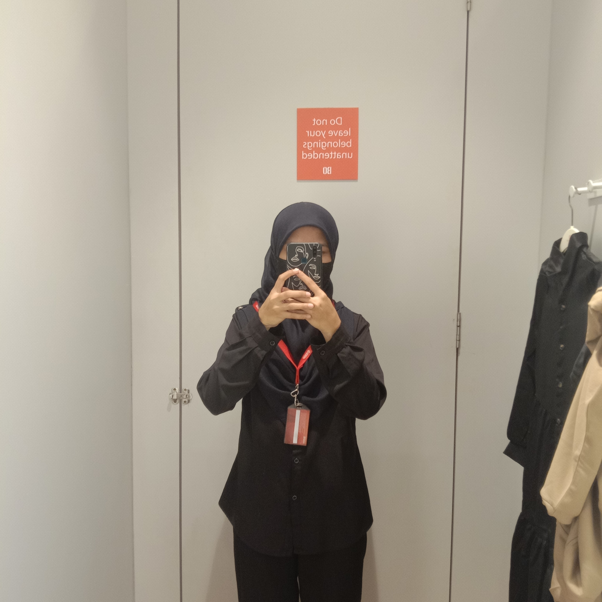

The only source of knowledge is experienceby Albert Einstein

me in my uniformhahhahahhaa. thanks to my sister i have so many black shirt
As soon as I finished my STPM, I continued working as a promoter at SOGO store in Central i-City Shah Alam while waited for STPM results to gain experience at the same time get some money.At first i fell nervous but as time goes by i can endured. My work has taught me that it's okay to embrace solitude.The hard thing is when I miss my home specially my parents because i need to stay at rent house.